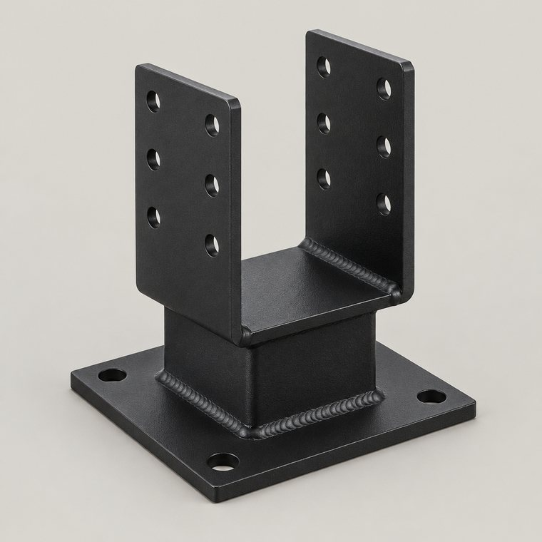

Беседки и зоны отдыха
Каркас, кровля, обвязка. Собираем с теми же коннекторами, что продаём, — без врубок и «на саморезах».
Угловые тройники, Т-образные соединения, опоры бруса и крепления стропил. Изготовим под стандартные сечения и по вашим чертежам. Работаем с частными заказчиками и строителями.
Под сечение 100×100 мм: опора с полкой под брус, сварная, из листовой стали 3 мм.
Шесть узлов с фото, размерами и описанием: видно, как выглядит изделие и куда оно ставится. Фото — макеты внешнего вида, на изделии возможны отличия по сварке и отверстиям.
Под этот фильтр позиций нет. Сбросьте вид или сечение — или закажите изделие по чертежу.
Цены не публикуем: стоимость зависит от сечения, толщины стали и объёма. Соберите корзину — пришлём расчёт с доставкой (8–25 BYN по Беларуси). Комплект на беседку считаем по вашей схеме узлов.
Под каждое сечение — свой размер изделия. Если бруса нет в списке, делаем под замер.
| Сечение бруса | Что обычно заказывают | Толщина стали |
|---|---|---|
| 80 × 80 мм | беседки, перголы, декоративные стойки | 3 мм |
| 90 × 90 мм | каркасы навесов, малые пристройки | 3 мм |
| 100 × 100 мм | стойки навесов, обвязка, зоны отдыха | 3 мм |
| 150 × 150 мм | несущие конструкции, основательные опоры | 3–4 мм |
| индивидуально | по чертежу или замеру на объекте | по проекту |
Толщину металла не занижаем: 3 мм — это минимум, а не «в среднем». На несущих узлах ставим 4 мм.
Отправляем своим транспортом или службой «Автолайт Экспресс» — прямо на участок. Стоимость доставки в среднем 8–25 BYN, точная сумма зависит от города и веса заказа.
Комплект крепежа небольшой и тяжёлый, поэтому отправка обходится дешевле, чем кажется: несколько десятков коннекторов едут одной посылкой.
Больше 10 лет в строительстве. Металл для дерева — не только товар, но и часть собственных проектов, поэтому узлы проверены на практике.
Каркас, кровля, обвязка. Собираем с теми же коннекторами, что продаём, — без врубок и «на саморезах».
От компактной перголы над зоной отдыха до навеса для машины. Считаем узлы и снеговую нагрузку.
Строительство бань под ключ: каркас, узлы, обвязка. Сроки и смета обсуждаются после осмотра участка.
Тоньше — значит быстрее деформация под нагрузкой и при сборке: металл «играет», отверстия уходят. 3 мм держит узел, поэтому это наш минимум. На несущих элементах ставим 4 мм.
Можно, но обычно заказывают комплект на конструкцию: доставка одна, а коннекторы нужны во всех узлах. Поможем посчитать количество.
Фото эскиза, размеры от руки или файл — подойдёт любой вариант. По нему назовём цену и срок изготовления.
Изделия можно заказать с покрытием — обсудите это при заказе. Металл без покрытия внутри конструкции всё равно стоит защищать от влаги.
Зависит от объёма: стандартные позиции готовим быстрее, индивидуальные — дольше. Срок называем при заказе, до оплаты.
Да, изготавливаем комплекты для строительных бригад и организаций: по чертежам, с расчётом на объект.
ИП Саевич А. А. Коннекторы и крепёж под брус, беседки, навесы. Производство — Борисов, заказчик в Гомеле, доставка по всей Беларуси.

Стоимость и срок изготовления назовём после заявки: цена зависит от объёма партии.
Цены в корзине не считаем: пришлём расчёт на всё содержимое с доставкой. Проверьте количество и отправьте заявку.
Отправить заявку в WhatsApp